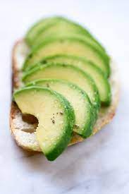
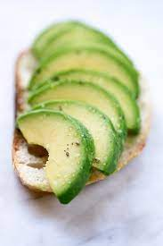

White Sauce Pasta
Origin: France/Italy Source: Own Recipe Category: Main Dish
White sauce pasta is a creamy and savory dish that can be enjoyed for either lunch or dinner. Inspired by a fusion of Italian and French cuisine, the rough texture of rigatoni pasta allows for heavier sauces to be picked up, including the flavor profile of this delicious sauce. This union of two cultures allows for the perfect balance between each component of the recipe, creating a fulfilling entree that every individual can enjoy.
Recipe Ingredients
- Olive Oil
- Butter
- Diced Onion
- Diced Garlic
- Diced Bell Pepper
- Rigatoni Pasta
- Heavy Whipping Cream
- Milk
- Shredded Parmesan Cheese
- Salt
- Ground Pepper
- Garlic Powder
- Onion Powder
- Paprika
- Oregano Leaves
- Bay Leaves
- Parsley Leaves
Recipe Steps
- Bring a pot of water to a boil. Once the water begins to bubble, add in the pasta, salt, and a drizzle of oil.
- While the pasta is cooking, heat oil and butter in a saucepan.
- Once the butter has melted, add in diced onions and garlic. Sauté them until golden brown or aromatic.
- Stir in the bell pepper until slightly softened.
- Pour in the heavy cream, milk, salt, ground pepper, garlic powder, onion powder, paprika, oregano leaves, and bay leaves into the saucepan. Mix well and allow for the mixture to simmer. Adjust the seasoning to your taste.
- Add the shredded parmesan cheese and stir until melted.
- Throw in pasta and mix until the pasta is coated with the creamy sauce.
- Garnish with parsley leaves, and enjoy.
Additional Food Images


Sushi Bake
Origin: Asian Source: Own recipe Category: Main Dish
Do you want easy, quick way to enjoy sushi without having to do all of the work? Try to make our sushi bake, which takes 10 minutes to assemble and 20 minutes to bake in the oven. Our recipe feeds 8 people.
Recipe Ingredients:
- 1 avocado
- 1/2 cup soon sauce
- 2 cups of rice
- 1 tablespoon of rice vinegar
- 3 tablespoons of mayo
- 1 8 oz package of imitation crab
- 1 medium piece of salmon
- 1 cucumber
- 3 tablespoons of sriracha
Recipe Steps:
- Preheat oven to 350 degrees
- Make rice. Mix rice vinegar into rice after it is cooked
- Lay out all of the rice at the bottom of a large baking dish
- Lay out the imitation crab and cucumber on top of the rice
- Mix the imitation crab and 2 TBSP mayo into a crab salad
- Smear the crab salad onto the next layer
- Slice the avocado and lay those on the top of the dish
- Pour the rest of the mayo and sriracha on top
- Bake for 20 minutes
- Enjoy!
Additional Food images:
 


Tomato and Eggs
Origin: China Source: Own recipe Category: Main Dish
Tomato and eggs is a hot dish which originated from China. It is a simple and fast dish to make, but it has good nutritional value. It is a very satisfying food to eat and popularly served with rice and topped with green onions.
Recipe Ingredients:
- Tomatoes
- Eggs
- Salt
- Sugar
- Cooking oil
Recipe Steps:
- Crack eggs into a bowl and mix until scrambled
- Cut tomatoes into pieces around the size of your thumb
- Oil a hot pan and cook the eggs until satisfied then remove the eggs
- Re-oil the pan and cook the tomatoes until they loosen
- Combine eggs and tomatoes and season with salt and sugar
Additional Food images: